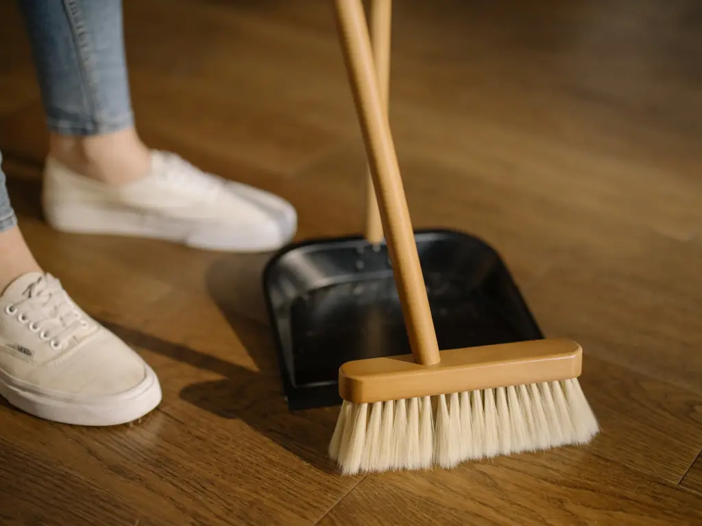
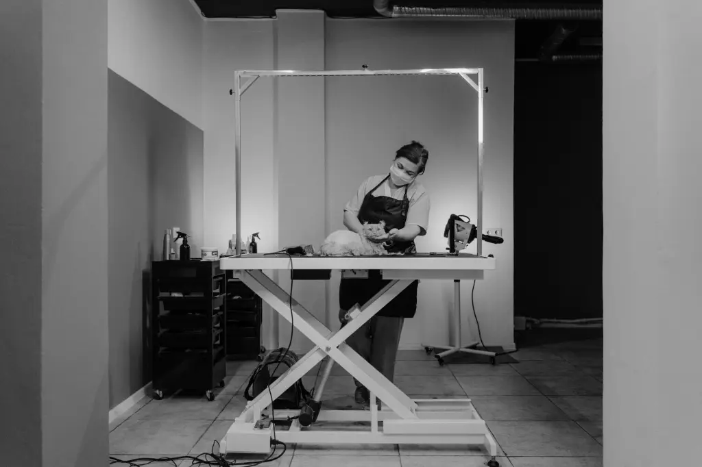
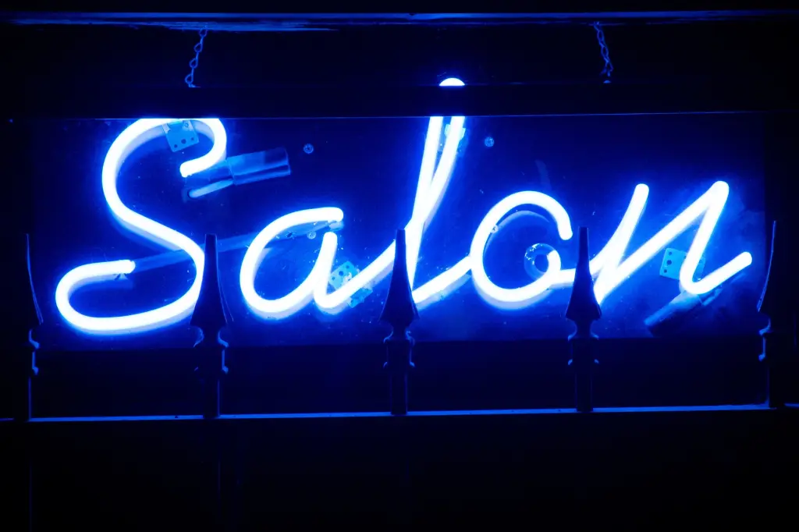
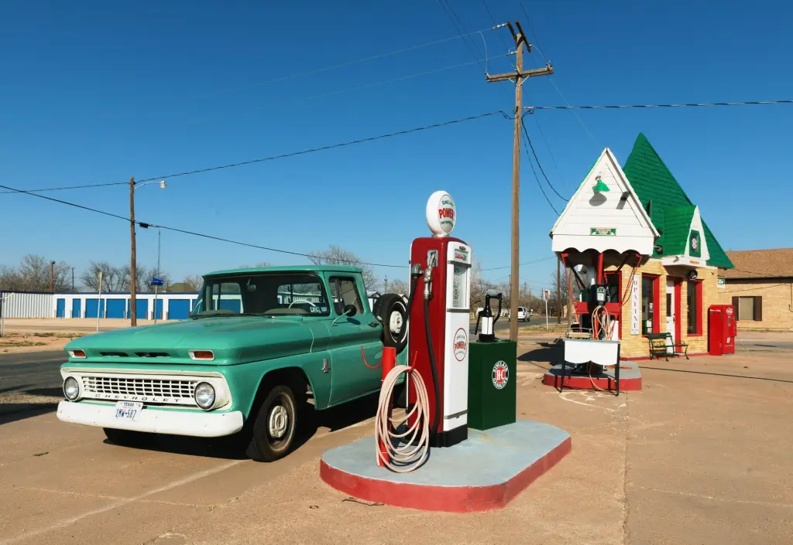
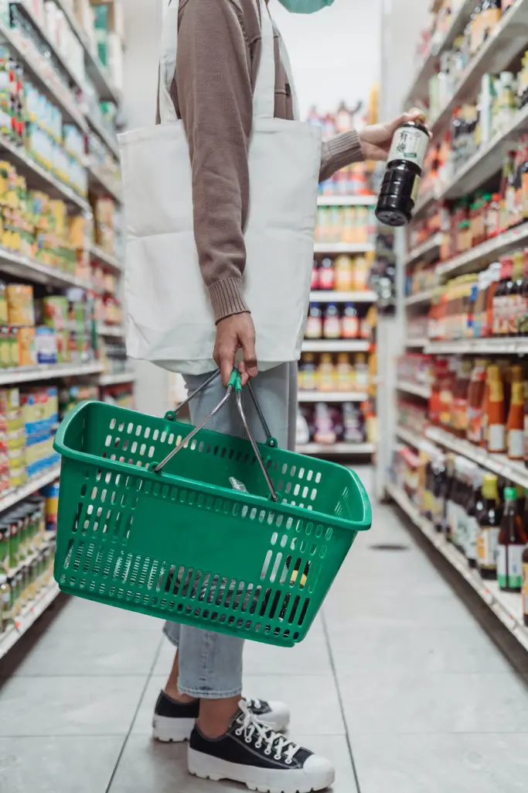
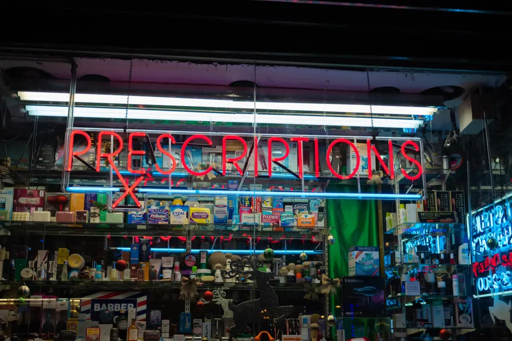
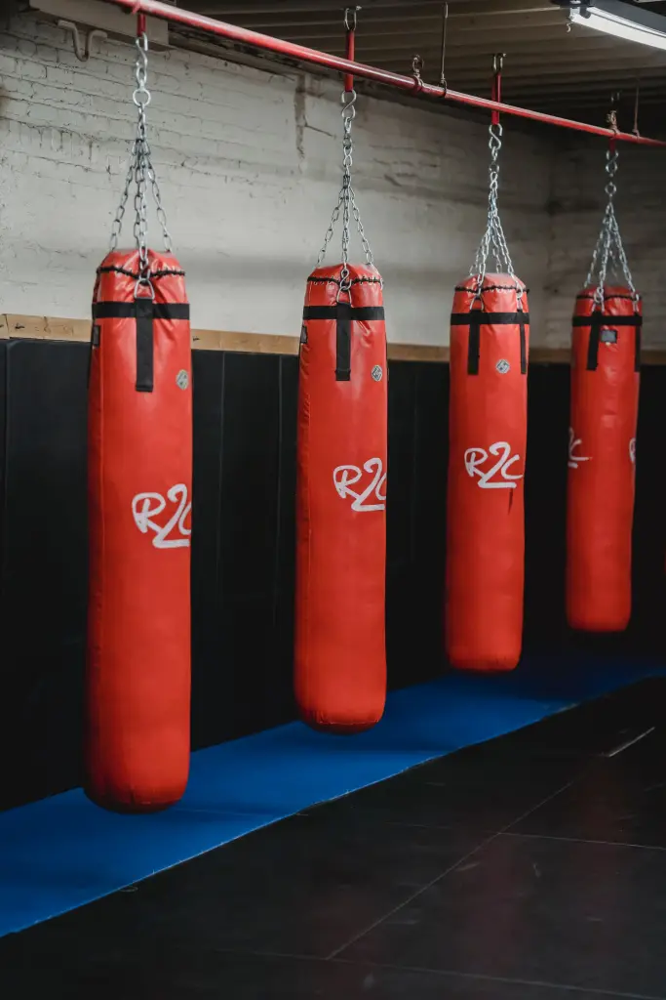
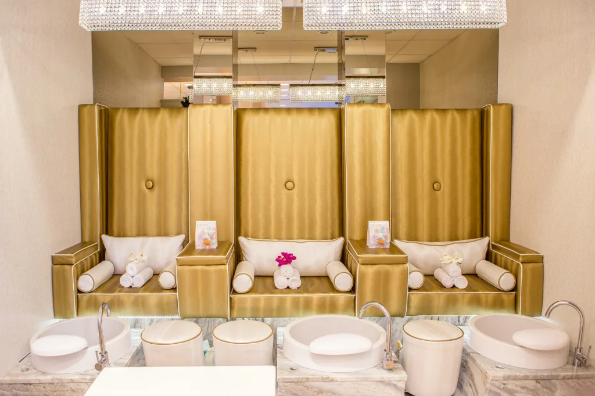
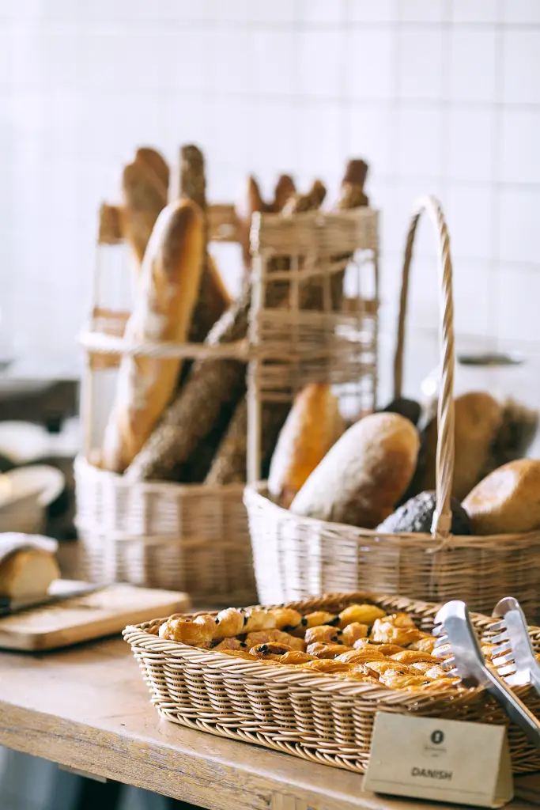

HELPFUL TIPS


Small-town business ideas
Starting a small-town business requires careful research and understanding of your community.
Once you have a sense of the existing businesses in your area and local demand (more on that below), you’re ready to decide which enterprise is right for you — and the community.Try to find an industry or service where profitable small businesses, the community’s needs and your own interests intersect. Here are a few small-town business ideas you might consider.
Small towns can have big business. Small towns provide both the opportunity of a concentrated market and the challenge of a small population. Finding viable small-town business ideas is all about meeting a current demand with an excellent product or service.To start a business in a small town, you’ll need to conduct market research as well as research into the specific geography of the physical location. In a small town, you rely on a smaller group of people for business, so choosing the right location is critical to maximize store traffic. Even if your business plan is based on services, knowing the size of your market is a good idea.
Coffee shop/bar hybrid
Make up for slower business traffic by providing beverages that people want all day. If coffee shops aren’t a “thing” in your town, serving coffee all day at a place where people do go, such as a bar, can gradually normalize the activity and encourage crossover business. A small-town bar may be your dream business, but a coffee shop can start making money as soon as the sun comes up; there’s no need to compromise as long as you create an environment that works for both day and night.
Contractor or handyman
Even in small towns, a good handyman is always in demand. If you’re frequently called by friends, family, and neighbors to come look at a leaking pipe or wobbly board, you could be on your way to starting a successful small-town business. Starting a contractor service will be relatively simple if you already do odd jobs and know who will hire you. If people in the area are unfamiliar with your work, try to contact a general contractor who is willing to offer a small project in exchange for your name being passed on to future clients. People you already know can help you in a word-of-mouth business like service work, repairs, and construction.
Vehicle maintenance
If you live in a rural or small town, you must have a car, but being far from a dealership can make routine maintenance difficult. Auto repair services fill an obvious need in small towns and make life easier for residents, so consider whether there is an opportunity to open a shop in your town.
Cars break down everywhere, and most tow trucks charge by the mile. So, if your town is a long distance from major cities, you might be able to start towing cars even if you don’t have a proper repair shop.
Housekeeping

Some people simply dislike cleaning, and there’s a good chance that a few of them live in your community. Why not start a cleaning service for them? This is another service that benefits from word-of-mouth referrals and can even be combined with other services such as babysitting or yard work.
Expert cleaning is a valuable skill, but it does not require you to spend a lot of money on courses or certifications, making this a great option for a side hustle with low overhead.
Computer and information technology services
Wherever they are, all businesses and individuals require technology support. There will always be people using technology — and having trouble connecting their WiFi — no matter how big or small the town.
Because it is less visible than a storefront business and less frequent than a service like housecleaning, this service will require slightly more advertising to get the word out. However, if you don’t intend to do major repairs, you won’t need much in the way of equipment, so you’ll keep overhead costs low as well.
Grooming and boarding for pets

If your town lacks a local supply shop or a large chain, such as PetSmart or PetCo, one of the great small-town business ideas is to open a pet store. Pet grooming and boarding services may be in high demand in your area, depending on the pet population.
If you want to open a pet store or a pet service in a small town, ask local pet owners where they get their food and grooming. If you want to offer grooming, walking, or boarding services, an existing pet shop owner in your town might be a good resource.
Barbershop or salon

Your town most likely has at least one barbershop or salon, but this may actually benefit you if you want to open a successful hair salon. If one demographic is underserved — for example, there is only one barbershop that caters primarily to men — determine who’s hair needs aren’t currently being met on Main Street.
If your town already has full-service hair salons and barbers, you might consider a more niche hair care business, such as a blow-out bar or a salon that also offers makeup, eyelashes, and tanning.
Service station

Filling stations may not be the most glamorous of businesses, but they are absolutely necessary in communities where the majority of people rely on cars and trucks for transportation. Small towns on or near major highways can see a lot of through traffic, and unlike most businesses, a gas station may benefit from beng in
the middle of nowhere. Lottery and tobacco sales can also bring in a lot of money, especially if you’re the only vendor in the area.
supermarket

When a town that could support a grocery store doesn’t have one, there’s probably a good reason for it: perhaps most people commute every day and shop elsewhere, or the population isn’t large enough to support a big-box chain.
If you want to go the independent route (rather than opening a franchise store), try to find a way to specialize your store so you don’t overspend on inventory. Make use of local products, trends, and tastes to help you make this decision.
Farmers market-style stores that sell local produce and seasonal goods are popular with both locals and tourists in agricultural areas. A town with a major chain grocery store but few options for organic, local, gluten-free, or vegan foods.
DrugStore

A drugstore or pharmacy requires more work, from hiring a pharmacist to purchasing insurance and installing security measures, but if your town doesn’t have a pharmacy, it could be a great opportunity to open a long-lasting business in your community.
This is one of the small-town business ideas that may be suitable for people who are trained pharmacists or are involved in the local medical profession. A pharmacy is undoubtedly an important business in every community, but if you decide to open your own, be wary of competing with large chain drug stores.
Gym or fitness studio

People are becoming more interested in fitness and taking care of their bodies. There are probably a few fitness freaks in your town. If you believe this is the case, opening a fitness studio or gym is an excellent small-town business venture. You can specialize in boutique fitness or simply provide a general fitness space for your community to work out.
However, of all the small-town business ideas, this one has the most startup costs — specifically, gym equipment. However, if you get some new members early on, you should be able to recoup your investment quickly, especially if you have a monopoly on the small-town fitness market.
Bed and breakfast
Regardless of the size of your town, you will always have visitors, whether they are family visiting from out of town for the holidays or tourists passing through. Having said that, providing visitors with a place to stay, such as a bed and breakfast, can be a fantastic small-town business idea. A bed and breakfast can serve a variety of clients, is open all year,
and does not require a large space or staff. If your small town is close to a major highway or city, a quaint, affordable bed and breakfast may be even more appealing to visitors or even locals looking for a weekend getaway.
Spa and nail salon

A nail salon and spa is another personal care business to consider, especially if your small town already has a hair salon and barbershop. Although this business caters to a similar demographic, it fills a slightly different need and can attract a significant amount of business during warmer weather, particularly during local graduations, proms, or weddings.
A nail salon and spa would require more staff and possibly more supplies than some of the other small-town business ideas on this list, but it can be a relatively sustainable endeavor, especially if there isn’t already a nail or spa business operating locally.
Daycare
If you have any teaching or childcare experience, starting a daycare may be the ideal small-town business idea for you. Parents, particularly working parents, will always require childcare services, particularly before their children reach school-age and even after school hours. Of course, a nearby daycare will be more convenient,
allowing parents to drop their children off before work and pick them up on their way home. Certainly, if your town does not currently provide daycare services, this can be a profitable business.
Bakery

Nothing beats a small-town bakery, where residents can get a good cookie, slice of cake, or croissant. If you have a knack for baking or know someone who does, this could be the ideal small-town business for you. By opening a bakery, you can appeal to your small town’s sweet tooth while also serving those looking for a quick
pastry and cup of coffee before work. You can also make cakes, cupcakes, or any other type of specialty dessert for events and parties. Starting a bakery is even better if your small town doesn’t already have one, and it’s probably less complicated than opening a full-service restaurant.